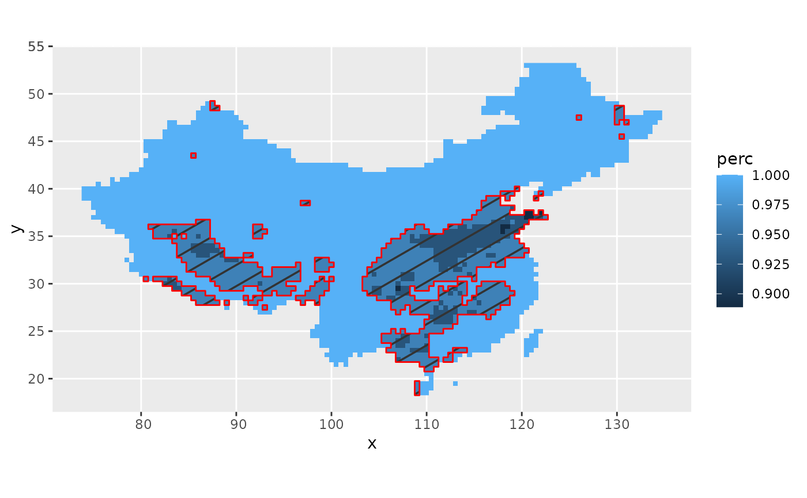
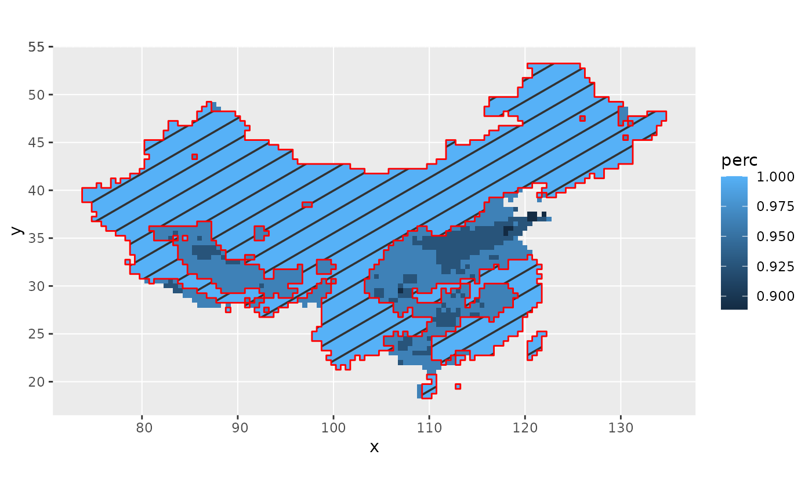

stat_signPattern.Rdstat_signPattern
stat_signPattern(
mapping = NULL,
data = NULL,
geom = "sf_pattern",
position = "identity",
show.legend = NA,
inherit.aes = TRUE,
...
)Set of aesthetic mappings created by aes(). If specified and
inherit.aes = TRUE (the default), it is combined with the default mapping
at the top level of the plot. You must supply mapping if there is no plot
mapping.
The data to be displayed in this layer. There are three options:
If NULL, the default, the data is inherited from the plot
data as specified in the call to ggplot().
A data.frame, or other object, will override the plot
data. All objects will be fortified to produce a data frame. See
fortify() for which variables will be created.
A function will be called with a single argument,
the plot data. The return value must be a data.frame, and
will be used as the layer data. A function can be created
from a formula (e.g. ~ head(.x, 10)).
Use to override the default connection between geom_signPattern()
and stat_signPattern.
A position adjustment to use on the data for this layer. This
can be used in various ways, including to prevent overplotting and
improving the display. The position argument accepts the following:
The result of calling a position function, such as position_jitter().
This method allows for passing extra arguments to the position.
A string naming the position adjustment. To give the position as a
string, strip the function name of the position_ prefix. For example,
to use position_jitter(), give the position as "jitter".
For more information and other ways to specify the position, see the layer position documentation.
logical. Should this layer be included in the legends?
NA, the default, includes if any aesthetics are mapped.
FALSE never includes, and TRUE always includes.
It can also be a named logical vector to finely select the aesthetics to
display.
If FALSE, overrides the default aesthetics,
rather than combining with them. This is most useful for helper functions
that define both data and aesthetics and shouldn't inherit behaviour from
the default plot specification, e.g. borders().
other parameters to ggpattern::geom_sf_pattern()
library(gg.layers)
library(ggplot2)
data("d_trendPerc")
d_mask <- mutate(d_trendPerc, mask = perc <= 0.99) # %>% as.data.frame()
# significant part; geom_sf_pattern still has bug unsolved.
ggplot() +
geom_raster(data = d_trendPerc, aes(x, y, fill = perc)) +
stat_signPattern(data = d_mask, aes(x, y, mask = mask),
fill = "transparent", color = "red",
pattern_density = 0.02)

# insignificant
ggplot() +
geom_raster(data = d_trendPerc, aes(x, y, fill = perc)) +
stat_signPattern(data = d_mask, aes(x, y, mask = !mask),
fill = "transparent", color = "red",
pattern_density = 0.02) #-> p

# Ipaper::write_fig(p, "temp.pdf")